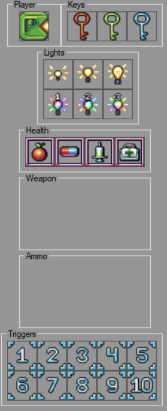

Objects, aside from some of them and modifiers, are basically items player can pickup.
Only one object can be placed in a single map cell. This is not the case when using scripts to spawn items though (see "Advanced Use/Scripts").

Player - this objects marks player starting point. There should be only one such point on the map!
Keys - keys that will allows appropriate doors to open.
Lights - lights to add some atmosphere. Top 3 are predefined and only have white color. The bottom 3 are user defined and map-specific. You can set them in the map properties panel to the right.
Health - health pickups. Amount of health player gets can be set in "Health Settings" option in "Object Settings" menu.
Weapons - weapons that have been created and added. This can be done from "Weapons Settings" option in "Objects Settings" menu.
Ammo - ammo for appropriate weapons. They are created automatically when a weapon is created.
Triggers - objects that will call a script or a sound file when collided with player. You can set them in the right panel.